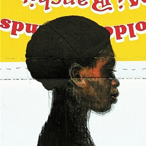
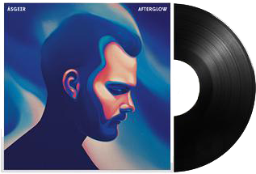
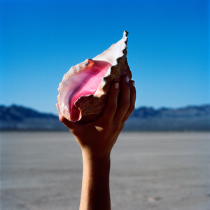

FavoriteThing
VOl.I
Mar - Jun 2018
When and how do I
I do not know if he liked it.
Even though you close your eyes
Maybe me
In love that was a few times wrong
A fearful heart
I'm still looking at you.
I love you and say that your eyes
What if I'm mistaken
Standing still
Someday when it appears in my face
Maybe then?

